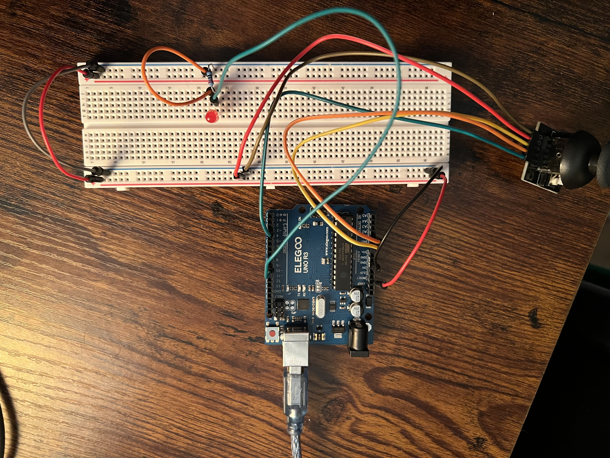
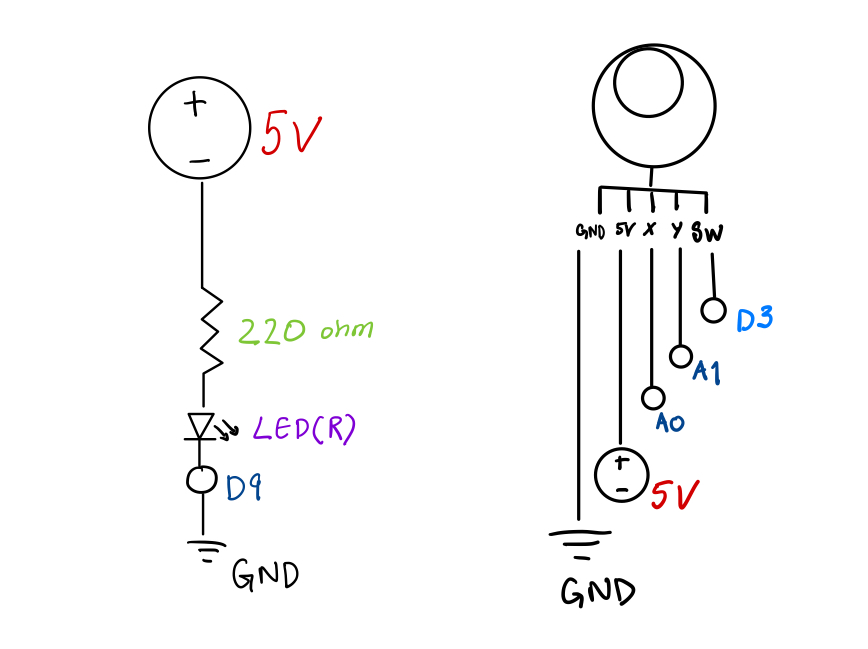

This assignment creates a two-way interaction between an Arduino and a
p5.js webpage using WebSerial.
The Arduino reads input from a 2-axis joystick (X position, Y position, and
built-in button). These three values are streamed to the webpage, where a p5.js sketch uses
them to move a visual cursor on the canvas and change its color when the button is pressed.
The webpage also sends commands back to the Arduino.
Dragging the mouse horizontally changes LED brightness (PWM), and pressing the B
key enables LED blinking until reset.
The Arduino reads three inputs from the joystick and prints them in the format
X,Y,Button for p5.js to parse.
It also receives simple commands from the webpage:
L### sets LED brightness, B enables blink mode, and R resets.
// ---------------------------
// A6: Arduino Joystick + LED
// ---------------------------
// Pin Setup
const int PIN_JX = A0; // Joystick X
const int PIN_JY = A1; // Joystick Y
const int PIN_BTN = 3; // Joystick button (uses INPUT_PULLUP)
const int PIN_LED = 9; // LED output
// LED Behavior
int ledBrightnessCmd = 0; // LED brightness (0-255)
bool blinkMode = false; // Blink flag
unsigned long lastBlink = 0;
const unsigned long BLINK_MS = 250;
void setup() {
// Serial for Web Serial communication
Serial.begin(9600);
// Joystick button uses internal pull-up
pinMode(PIN_BTN, INPUT_PULLUP);
// LED
pinMode(PIN_LED, OUTPUT);
// Ensure LED starts off
analogWrite(PIN_LED, 0);
}
void loop() {
// Read joystick inputs
int joyX = analogRead(PIN_JX);
int joyY = analogRead(PIN_JY);
int joyButton = digitalRead(PIN_BTN);
// Handle incoming commands from JavaScript
while (Serial.available() > 0) {
char c = (char)Serial.read();
if (c == 'L') {
ledBrightnessCmd = constrain(Serial.parseInt(), 0, 255);
}
if (c == 'R') {
blinkMode = false;
ledBrightnessCmd = 0;
}
if (c == 'B') {
blinkMode = !blinkMode;
}
}
// Blink mode override
if (blinkMode) {
unsigned long now = millis();
if (now - lastBlink >= BLINK_MS) {
lastBlink = now;
ledBrightnessCmd = (ledBrightnessCmd > 0) ? 0 : 255;
}
}
// Apply LED brightness
analogWrite(PIN_LED, ledBrightnessCmd);
// Send joystick data to JavaScript
Serial.print(joyX);
Serial.print(',');
Serial.print(joyY);
Serial.print(',');
Serial.print(joyButton == LOW ? 1 : 0);
Serial.print('\n');
delay(20);
}
The webpage displays a circle whose position is controlled by joystick X/Y. Dragging the mouse sends LED brightness to the Arduino. Pressing B triggers blink mode, and R resets it.
// ---------------------------
// A6: p5.js WebSerial Sketch
// ---------------------------
// SERIAL STATE
let port; // Serial port
let reader; // Reader for incoming serial data
let decoder = new TextDecoder();
let buffer = ""; // Holds incoming partial lines
// ARDUINO INPUTS
let joyX = 512; // Joystick X (0–1023)
let joyY = 512; // Joystick Y (0–1023)
let btn = 0; // Button state: 1 pressed, 0 not
// ARDUINO OUTPUT (LED CONTROL)
let ledValue = 0; // PWM 0–255
// CANVAS SETUP (a6.js)
function setup() {
createCanvas(500, 400);
textSize(16);
// Connect Arduino
document.getElementById("connect").addEventListener("click", connectSerial);
}
// DRAW LOOP
function draw() {
background(230);
// Display Arduino values
fill(0);
text(`X: ${joyX} Y: ${joyY} Button: ${btn}`, 10, 25);
text(`LED PWM: ${ledValue}`, 10, 50);
// Convert joystick to ball position
let x = map(joyX, 0, 1023, 0, width);
let y = map(joyY, 0, 1023, 80, height);
// Button pressed = red ball
fill(btn ? "red" : "dodgerblue");
// ball
circle(x, y, 40);
// Mouse drag controls LED brightness
if (mouseIsPressed) {
ledValue = round(map(mouseX, 0, width, 0, 255));
sendToArduino("L" + ledValue);
}
}
// KEYBOARD INPUT - ARDUINO COMMANDS
function keyPressed() {
if (key === "b" || key === "B") sendToArduino("B"); // Blink LED
if (key === "r" || key === "R") { // Reset LED
sendToArduino("R");
ledValue = 0;
}
}
// CONNECT TO ARDUINO USING WEB SERIAL
async function connectSerial() {
port = await navigator.serial.requestPort();
await port.open({ baudRate: 9600 });
reader = port.readable.getReader();
readLoop(); // Begin reading
}
// READ DATA FROM ARDUINO FOREVER
async function readLoop() {
while (port.readable) {
const { value, done } = await reader.read();
if (done) {
reader.releaseLock();
break;
}
// Decode incoming bytes into text
const text = decoder.decode(value);
buffer += text;
// Split buffer into complete lines
let lines = buffer.split("\n");
buffer = lines.pop(); // save incomplete line
// Process each full line
for (let line of lines) {
let parts = line.trim().split(",");
if (parts.length === 3) {
joyX = int(parts[0]);
joyY = int(parts[1]);
btn = int(parts[2]);
}
}
}
}
// SEND ANY MESSAGE TO ARDUINO
async function sendToArduino(msg) {
if (!port || !port.writable) return;
let writer = port.writable.getWriter();
await writer.write(new TextEncoder().encode(msg + "\n"));
writer.releaseLock();
}

The joystick contains two potentiometers wired as voltage dividers. Each divider outputs a voltage between 0–5 V, which the Arduino reads using its 10-bit ADC:
ADC Range: 0–1023 (because 2^10 = 1024 levels)
Voltage Step: 5 V / 1023 ≈ 0.00488 V per count
Center of joystick ≈ 2.5 V → analogRead() ≈ 512
Full left/up ≈ 0 V → analogRead() ≈ 0
Full right/down ≈ 5 V → analogRead() ≈ 1023
On the webpage, these values are mapped to canvas coordinates:
x = map(joyX, 0, 1023, 0, width)
y = map(joyY, 0, 1023, 50, height)
LED brightness uses PWM on pin D9.
analogWrite() accepts values 0–255, so the webpage maps mouse X to:
PWM = (mouseX / canvasWidth) × 255
I used ChatGPT to help structure the A6 documentation, clean the two-way WebSerial logic, and ensure my Arduino and p5.js code matched the assignment requirements. The tool helped debug serial parsing issues and improve my understanding of ADC ranges, input mapping, and PWM behavior. All wiring, testing, and interaction design decisions were validated on my own hardware.